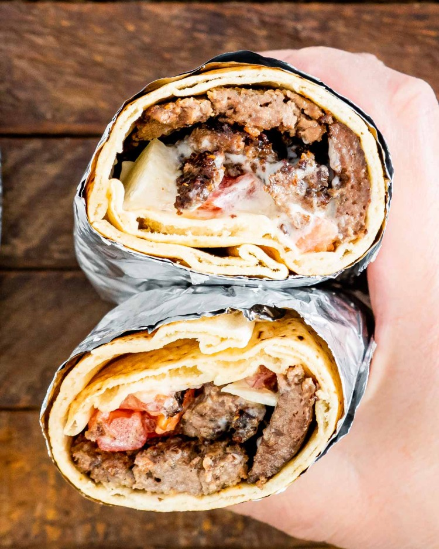

This is a Lebanese donair recipe, a traditional dish made with seasoned meat and tahini sauce that's enjoyed in many parts of the Middle East.
3 ¼ pounds boneless top round steak, sliced very thin
½ cup red wine vinegar
½ cup olive oil
¼ cup fresh lemon juice 1 teaspoon allspice
½ teaspoon ground cinnamon
¼ teaspoon cardamom
½ teaspoon ground black pepper salt, to taste
2 large tomatoes, coarsely chopped
1 clove garlic, minced